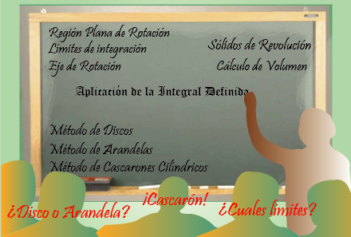

Inicio
Presentamos este recurso para colaborar en la abstracción y comprensión de ciertos conceptos involucrados en el Cálculo de Volumen de Sólidos de Revolución, no es objetivo de nuestro estudio los planteamientos matemáticos específicos, sin embargo, incluimos una sección de repaso complementaria.
Existen ocasiones en las cuales no poseer el concepto claro nos podrían causar algunos errores de planteamiento. Evidentemente en este caso no se puede llegar a una adecuada solución.

-
Iniciamos con el Objetivo Específico de Aprendizaje
-
Abordamos los Contenidos involucrados.
-
Posteriormente incluimos las actividades principales que nos permitirán la comprensión y abstracción de elementos como: eje de rotación, región plana generadora, límites, etc.
-
Invitamos a realizar la Autoevaluación para verificar el aprendizaje obtenido
-
Finalmente se encuentran las referencias utilizadas así como también información sobre el autor